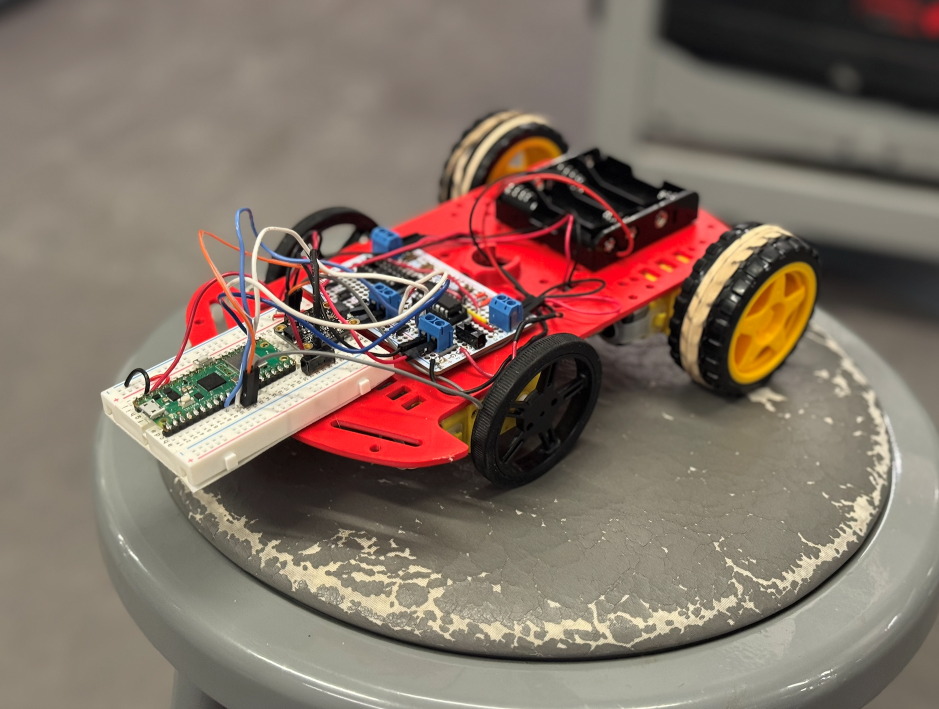

My Projects
Mouse-drawn paths turned into real-world robot motion via two Pico Ws communicating over UDP. Supports direct-follow and optimized-route modes.

Full-stack control system for precision laser tracking at NASA JPL. Built RESTful APIs, a real-time React dashboard, and BER analysis with NumPy and Pandas.
Real-time audio synthesis in C using direct digital synthesis and fixed-point arithmetic under strict timing constraints. Block-based waveform generation with runtime parameter updates to eliminate audible artifacts.
Full-stack ERP features for CUAir: React frontend, FastAPI + SQLite backend, and REST APIs with structured logging. Also owns core C++ firmware and custom PCBs for an autonomous aerial payload.
Designed and validated a fiber-optic sensing system at NASA JPL. Defined evaluation metrics, characterized failure modes, and built a telemetry pipeline for near-real-time analysis. First author on a provisional patent “Interferometric Fiber-Optic Systems and Methods for Detecting Reflected Acoustic Signals”.
This site! Built with a home page, projects showcase, and about page. (There's a hidden mini game somewhere, can you find it?)